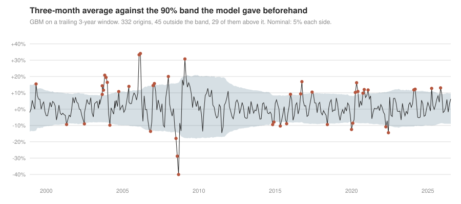
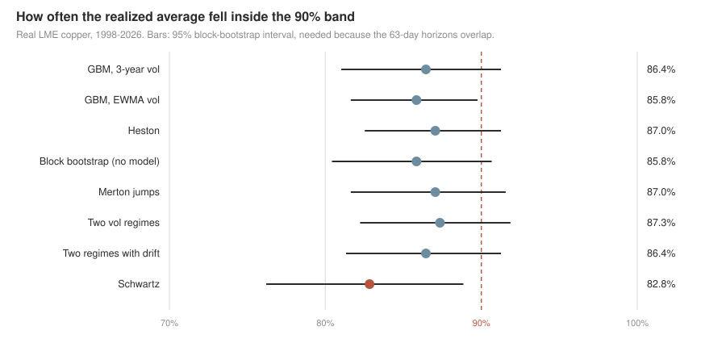
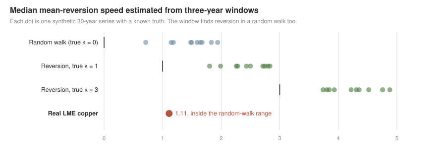
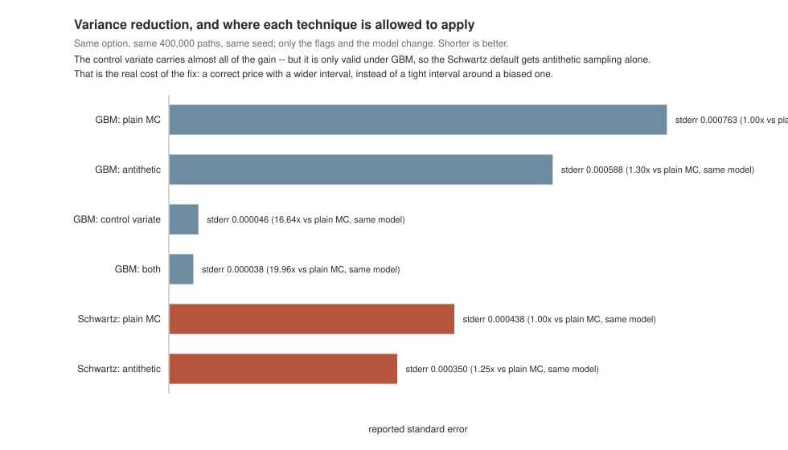
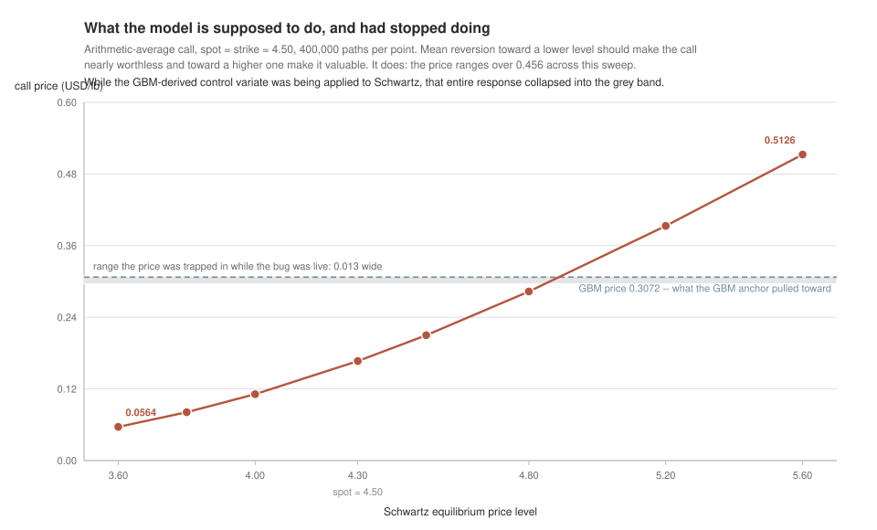
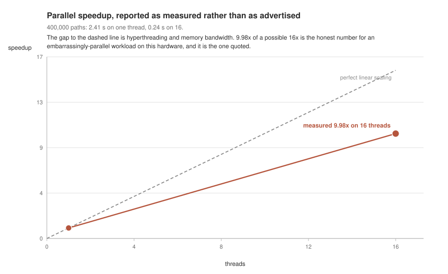
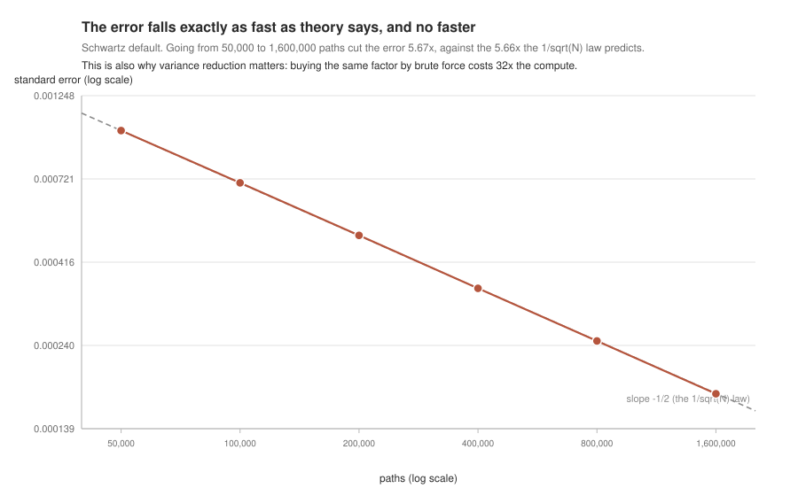

A C++20 pricer for copper Asian options under GBM, Schwartz and Heston, then tested on 30 years of real LME prices. Stochastic volatility barely helps, and the mean reversion a three-year window finds is what a random walk also produces.
This page shows the project's results. The methodology, the design decisions and the limitations are documented in the repository's README.
Backtest on the real LME price
Every 21 trading days from 1998 to 2026, each model is re-estimated on the previous three years only and predicts the average of the next 63 fixings. There are no public LME option quotes, so this tests the distribution the models assign to the average, not whether they match market prices.

Red points fall outside the band given beforehand. Most misses are rallies, such as 2003-2008 and the 2020 rebound.

All models run narrow. Heston covers 87.0% and improves CRPS by 1.1%, the same as resampling past returns with no model. Schwartz is the lowest, and its interval excludes 90%.

Copper's median of 1.11 sits inside the range a random walk gives. This does not prove copper has no reversion, only that a three-year window cannot detect it. The same backtest picks Schwartz in 10 of 10 series when the true speed is 3, so the scorer is not rigged against it.
Jumps and regimes do not close the gap either. Merton gains 0.6 bps and two volatility regimes 3.3, against 13.4 for the same regime model on series with true regimes. Keeping the estimated drift makes the distribution worse by 16.4 bps. No model reaches 90% or improves CRPS by more than about 1%.
Variance reduction, measured as a controlled A/B

Each bar is compared against the plain-MC baseline of its own model, which is the comparison the earlier "~46x" claim got wrong by mixing two. It also shows the price of the fix plainly: the Schwartz default now gets antithetic sampling alone, worth 1.25x, where GBM gets 19.96x from both techniques.
The control variate was biasing every Schwartz price

The red curve is the model doing its job, re-measured live by the figure generator rather than copied from this table. The dashed line is the GBM price, and the grey band is the 0.013 of room the price had while the bug was live — a model that answered the same thing whatever you told it about copper's equilibrium level.
A standard-error bug this measurement exposed

Tests

The convergence check as a picture: the measured errors sit on the theoretical -1/2 slope, and buying a 5.7x tighter interval by brute force costs 32x the paths. That ratio is the whole economic argument for variance reduction, and the reason losing the control variate on Schwartz is a real cost rather than a footnote.